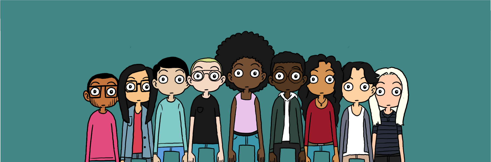

Binnen een paar seconden op basis van huidskleur, geslacht,
afkomst enz. vormen we een mening over een persoon die zich komt
voorstellen. Dit heet unconscious bias. Het gaat snel en
onbewust. Dit vinden wij hier bij Tada een probleem en willen
mensen rondom ons er meer bewust van maken.
We bieden aan ongeveer 1300 maatschappelijk kwetsbare kinderen
uit Brussel buitenschoolse activiteiten waarbij ze kennis kunnen
maken met prachtige jobs.
Het is voor ons heel belangrijk dat de kinderen kunnen inzien
dat wat dan ook je afkomst, kleur of geslacht is je alles kan
worden wat je maar wilt als je er hard voor werkt.

Maak kennis met
Unconscious Bias

Word snel vrijwilliger en help ons honderden sociale kwetsbare kinderen te coachen!

Dankzij jullie donaties kunnen we meer en meer kwetsbare kinderen over heel Brussel helpen!